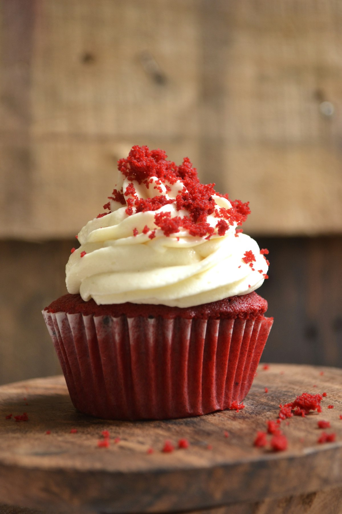

Ceramic Metallurgy
Bone China vs Porcelain vs Stoneware: Density, Vitrification & Translucency
High-fire 1,280°C kiln firing, tricalcium phosphate translucency, water absorption rates (<0.05%), and acoustic ring testing.